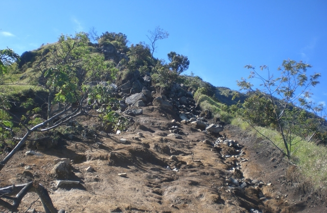

Gunung Sumbing Merupakan gunung api yang terdapat di Jawa Tengah, Indonesia. (Ketinggian puncak 3.371 mdpl), gunung Sumbing merupakan gunung tertinggi ketiga di Pulau Jawa setelah Gunung Semeru dan Gunung Slamet. Gunung ini secara administratif terletak di tiga wilayah kabupaten, yaitu Kabupaten Magelang; Kabupaten Temanggung; dan Kabupaten Wonosobo. Bersama dengan Gunung Sindoro, Gunung Sumbing membentuk bentang alam gunung kembar, seperti Gunung Merapi dan Gunung Merbabu, apabila dilihat dari arah Temanggung. Celah antara gunung ini dan Gunung Sindoro dilalui oleh jalan provinsi yang menghubungkan kota Temanggung dan kota Wonosobo. Jalan ini biasa dijuluki sebagai "Kledung Pass".
Letusan terakhir tercatat pada tahun 1730, yang membentuk kubah lava dengan aliran lava ke arah bibir kawah terendah.Gunung Sumbing mempunyai kawasan hutan Dipterokarp Bukit, hutan Dipterokarp Atas, hutan Montane, dan Hutan Ericaceous atau hutan gunung.
Jalur pendakian Gunung Sumbing paling populer adalah melalui pos Garung. Garung adalah sebuah desa di kaki bagian utara Gunung Sumbing, di kawasan Kledung Pass. Dekat dengan Desa Garung tersebut juga terdapat basecamp untuk pendakian ke Gunung Sindoro. Selain itu juga terdapat jalur lain seperti Bowongso, Cepit, Lamuk, Banaran, Butuh Kaliangkrik, dan Mangli Kaliangkrik.
Untuk lebih lengkapnya mengenai Gunung Sumbing, silahkan buka: Gunung Sumbing
| Jalur Sumbing |
| 
|
| 3.371 m (11.060 kaki) |
Letak Gunung Sumbing dan Gunung Sindoro saling berhadapan. Banyak disebut oleh masyarakat bahwa gunung Sumbing-Sindoro adalah gunung kembar layaknya gunung Merapi-Merbabu. Tinggi yang tidak jauh berbeda, dan juga kondisi alam gunung yang juga hampir sama. Namun bagi para pendaki Gunung Sumbing memiliki trek yang lebih berat daripada Gunung Sindoro dikarenakan gradien kemiringan yang terjal dan rute yang lebih panjang.
Adapun untuk lebih jelasnya mengenai Letak Geografis, Dapat dibuka: Geografis Sumbing
Info Pendakian >>>